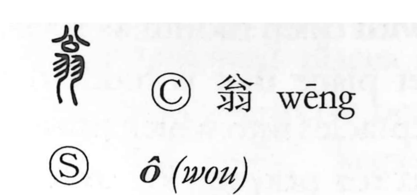

翁

Uncategorized
Kun: okina | On: ou
old man ・ venerable elder
Explanation
Shirakawa interprets 翁 as a phono-semantic graph. The lower element 羽 is the pictograph of feathers, and the original image evoked the ruff of plumage at a bird’s neck. Because that feathery collar suggested the long, flowing hair of an aged person, the character came to mean an old man. The upper element 公 serves as the phonetic, providing the on reading ou; the same phonetic value appears in a related “jar” graph read ou in Japanese, reinforcing the reading.